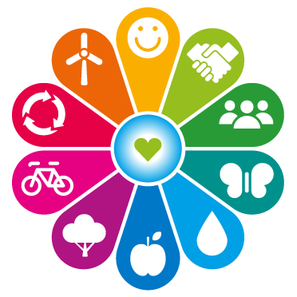

MANEJO SUSTENTABLE DE LOS RECURSOS NATURALES
Se refiere al uso, desarrollo y protección de los recursos, tanto naturales como físicos, a una tasa que permite a las personas y comunidades proveerse de bienestar social, económico y cultural en beneficio de su salud y seguridad, mientras mantiene su potencial original a lo largo del tiempo.
Los recursos naturales se clasifican en:
- Los renovables son aquellos que, aunque sean extraídos, tienen la capacidad de reponerse de manera natural, como es el caso de los organismos, el suelo y el agua.
- Los recursos naturales no renovables, no se reconstituyen al ser extraídos de la naturaleza, de modo que disminuyen poco a poco; tal es el caso de los minerales y, entre éstos, el petróleo.
- Los recursos naturales inagotables son aquellos que no se extinguen, terminan o gastan con el uso ni con el paso del tiempo. Ejemplos de recursos naturales inagotables son: - Radiación Solar - Viento - Mareas - Energía geotérmica (calor en el interior de la Tierra).
